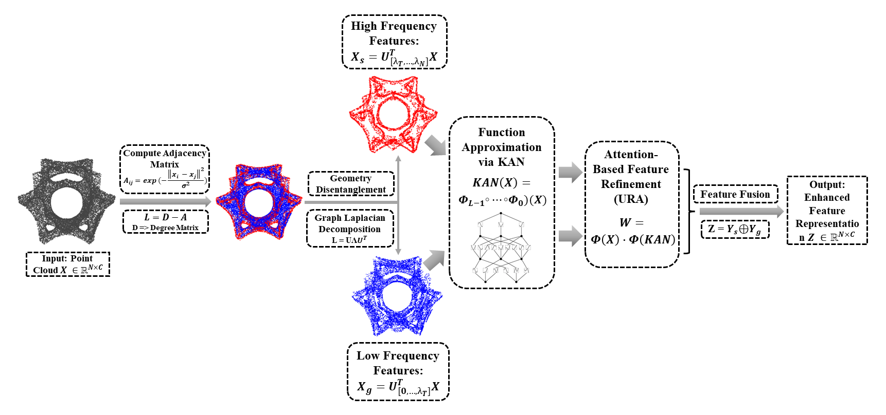
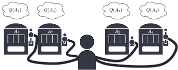
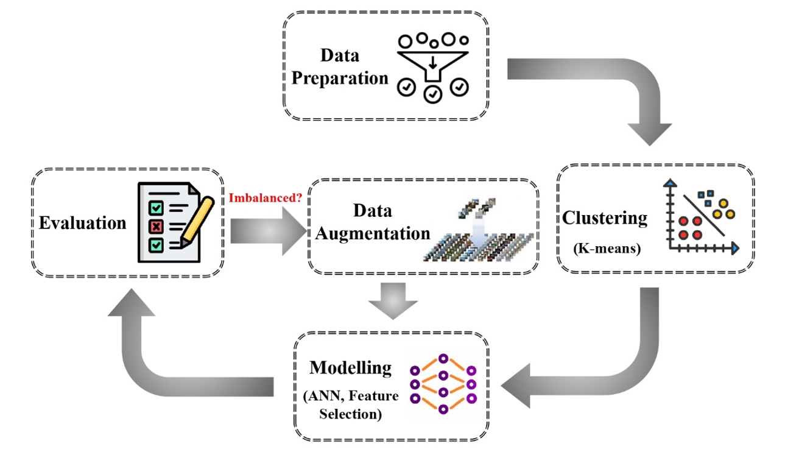
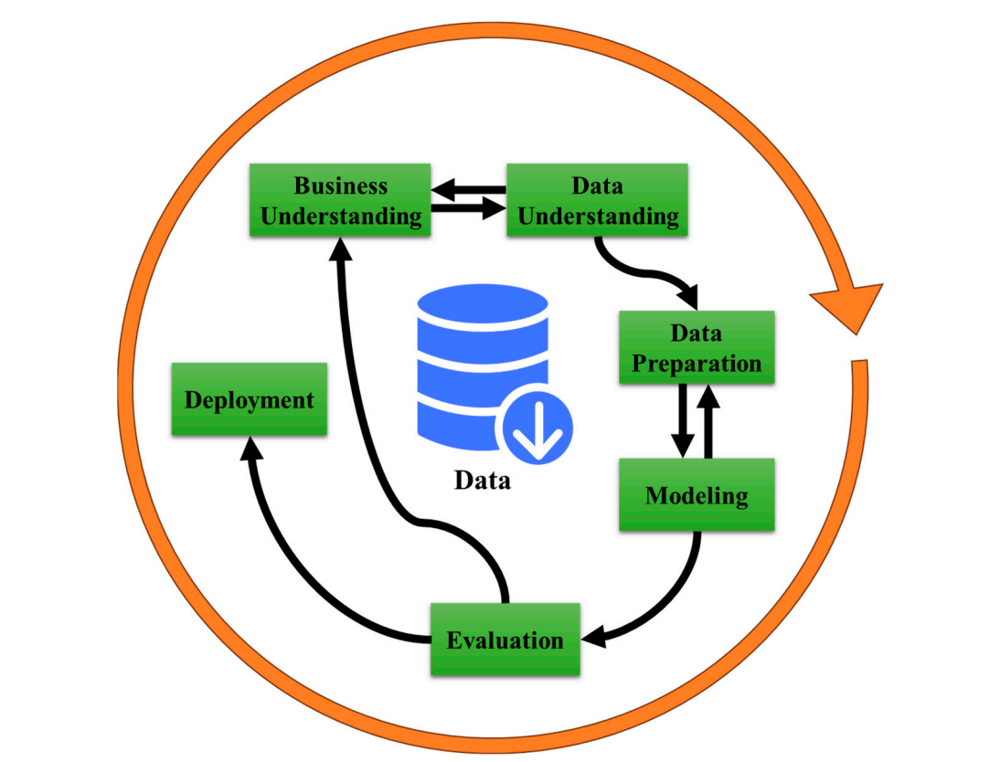
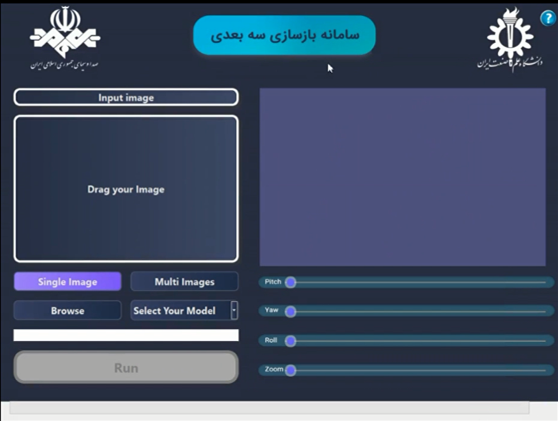
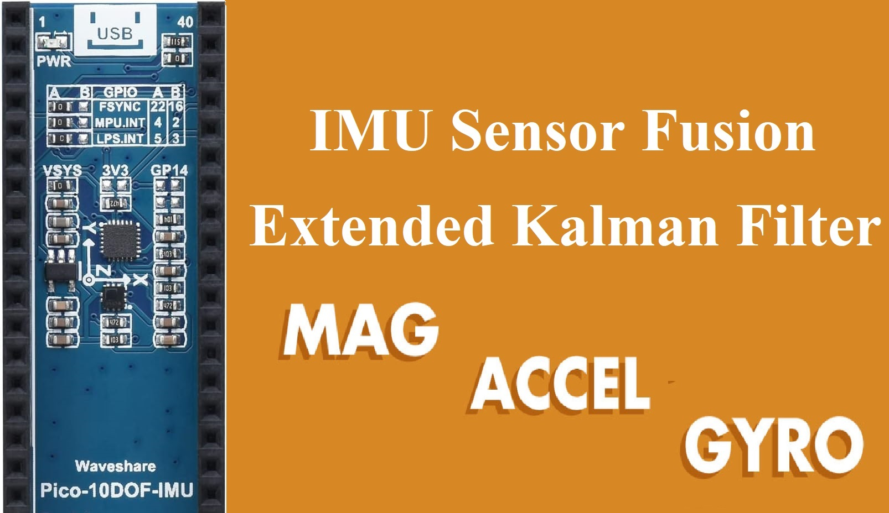
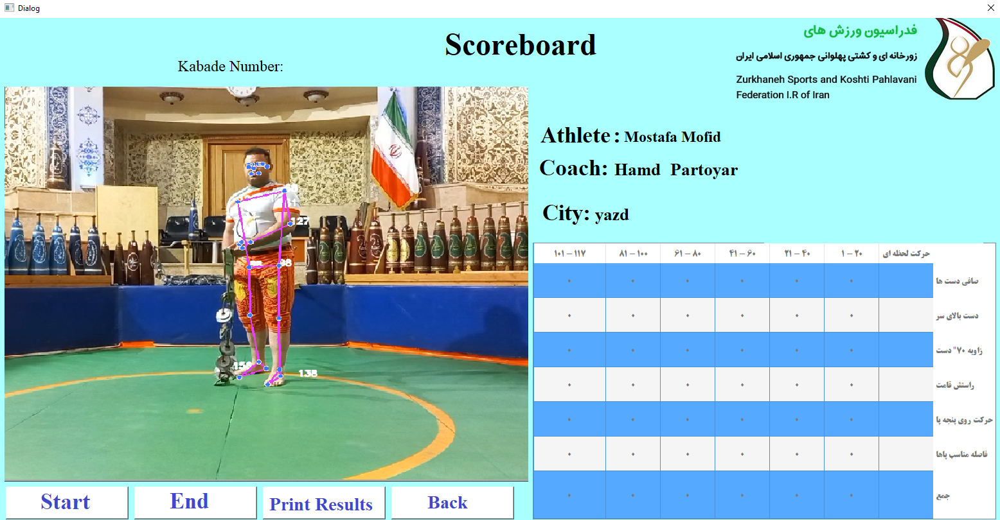
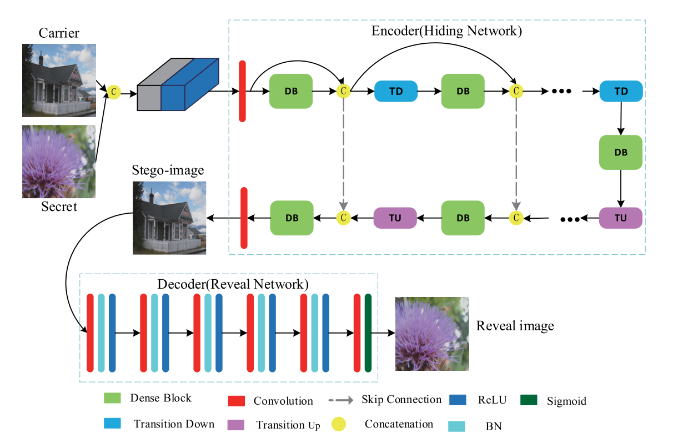

About Me
I graduated in August 2023 and I was supervised by Dr. Sattar Mirzakuchaki. I am interested in solving machine learning, computer vision, image and signal processing real-world problems using Artificial Intelligence. I am currently working as a AI and robotic engineer at a computer vision division of Octa Startup Accelerator in IRAN. I achieved exemption from Iran's Universities Entrance Exam for my Master's degree due to graduation with second rank at Iran University of Science & Technology.
Awards & Honors
- Being finalist for the Manufacturing AI Competition. (2024)
- Best Presentation Award for 3D Reconstruction Application at IRIB. (2023)
- Graduated with rank 5 among 127 entrants in Electrical engineering in Iran University of Science & Technology. (2021)
- Graduated with rank 2 among 35 students of Electronics field in Iran University of Science and Technology. (2021)
- Ranked 672nd among approximately 150,000 participants in the National Entrance Exam for Iranian Universities. (2017)
- Exempted from Iran’s Universities Entrance Exam for Master’s Degree at Iran University of Science & Technology. (2021)
- Winner of the "Financial Educational Reward" from Iran's National Elites Foundation, Iran University of Science and Technology, Iran. (2020, 2021)
- Government Tuition-fee scholarship for B.Sc. and M.Sc degrees (2017 - 2021, 2021 - 2023)
Publications

KANGURA: Kolmogorov-Arnold Network-Based Geometry-Aware Learning with Unified Representation Attention for 3D Modeling of Complex Structures in Advanced Manufacturing
Under preparation
Draft
LNUCB-TA: Linear-nonlinear Hybrid Bandit Learning with Temporal Attention
Submitted to Journal of Machine Learning
Paper
Enhancing Employee Turnover Prediction with Optimized ANNs and Data Augmentation: A Cluster-Based Approach in HR Analytics
Decision Analytics Journal
PaperChatbots and ChatGPT: A Bibliometric Analysis and Systematic Review of Publications in Web of Science and Scopus Databases
The International Journal of Data Mining, Modelling and Management
Paper
Optimizing Forest Fire Prediction: A Comparative Analysis of Machine Learning Models through Feature Selection and Time-Stage Evaluation
Submitted to Automation Journal
PaperMy Projects
SmartCommute
Our system tracks customers' faces as they commute to the store, estimates their age, counts the unique number of individuals, and verifies the presence of salespeople within the store. It provides valuable insights for customer traffic analysis and staff monitoring.
Note: Code cannot be shared yet due to project funding and confidentiality constraints.
Demo: Watch Video on Drive ↗

3D Reconstruction Application
As a funded project, we've developed a state-of-the-art 3D reconstruction application that operates in near real-time, utilizing image and video feeds to dynamically create 3D models of diverse subjects such as environments, objects, bodies, and faces. Employing cutting-edge technologies like Nerf, Gaussian Splatting, ECON, HRN, Meshroom, Avatar. To improve user experience, we've designed a user-friendly graphical interface based on Qt5.
Our project has garnered recognition and has been nominated for the Distinguished Service award, showcasing its excellence and impact in the field.
Note: Code cannot be shared due to project funding and confidentiality constraints.
Demo: Watch Video on Drive ↗

Optical Flow
Implementation of Optical Flow on our data captured by IMX219-160 camera using ORB method to estimate displacement of robot which has been used in Robot Localization project.
Demo (2x Speed): Watch Video on Drive ↗

Age-invariant Face Recognition
For my Master's thesis, I implemented and evaluated "When Age-Invariant Face Recognition Meets Face Age Synthesis" paper. I evaluated this method on a unique dataset that I compiled, featuring 150 images of 50 well-known Iranian personalities. These images were collected from online sources and underwent preprocessing, including enhancement and cropping, to prepare them for analysis.
Abstract Iranian Famous Dataset Paper
Results:


IMU-Fusion
Implementation of 9 DOF Inertial Measurement Unit (IMU) sensor fusion using Extended Kalman Filter (EKF) with Magnetometer and Accelerometer calibration. Usable for different types of IMU sensors such as MPUXXX, ICM20948,...
Demo: Watch Video on Drive ↗

SmartRefree
As a funded project by Traditional Sports Federation of Iran we've developed an intelligent referee AI system to count and assess the correctness of athletes' movements with a high degree of accuracy. To achieve this, we employ pose estimation deep learning models that accurately identify key points on the athlete's body. This information is then subjected to geometry-based calculations.
The culmination of this process is a comprehensive display of results on the stadium scoreboard in Persian. By employing our AI-based system, we aim to eradicate the potential for human error and biases in the scoring of athletes, ushering in a new era of fairness and accuracy in sports evaluation.
Note: Code cannot be shared due to project funding and confidentiality constraints.
Demo: Watch Video on Drive ↗
